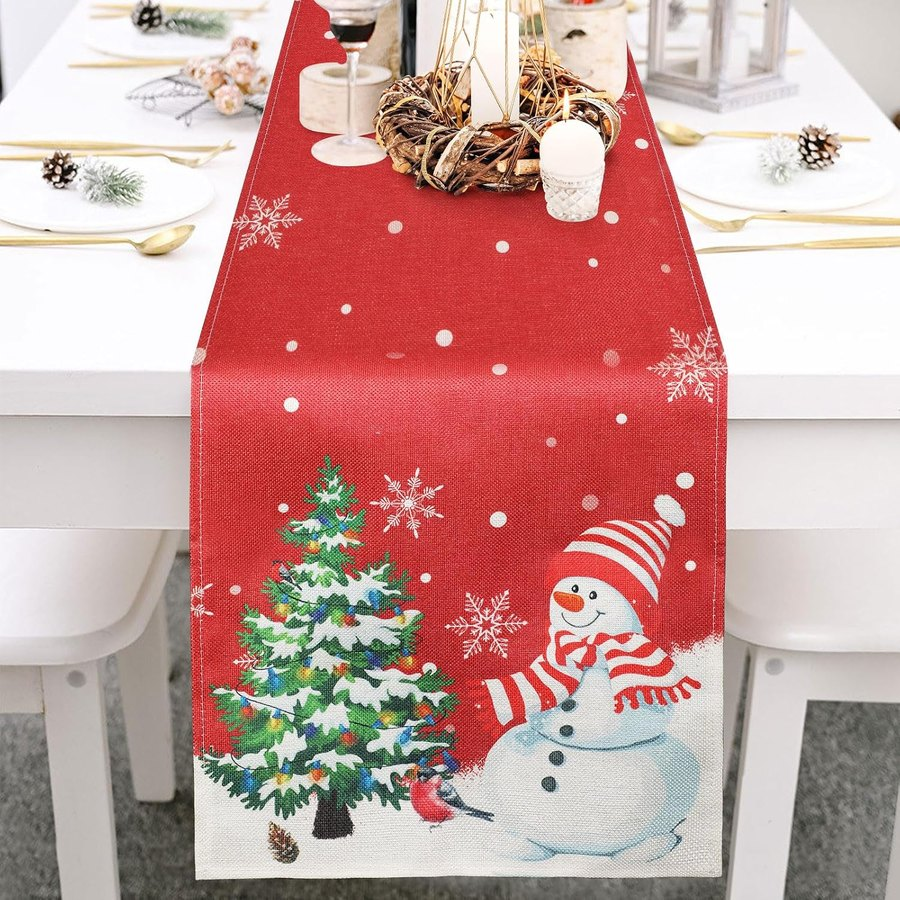

Bigqin, camino de mesa de 183 × 33 cm
Un camino de mesa largo y estrecho, de 183 × 33 cm (en la ficha también aparece 182,9 × 33 cm). El fabricante indica que sirve para una mesa de 4 a 6 personas. Material declarado: lino, lavable a máquina hasta 30 °C, con secado al aire y planchado cuando está medio seco. La ficha lo presenta como suave, duradero y que no se desvanece fácilmente; no hemos probado esa durabilidad, así que lo dejamos como declaración del fabricante. El estampado, según el título, combina flor de nieve, muñeco y árbol sobre fondo rojo. Lo vende Bigqin.Europe, con envíos de Amazon, y la entrega anunciada es el jueves 19 de noviembre (hay una opción más rápida para el 16). Valoraciones: 4,5 sobre 5, a partir de 161 opiniones.
6,99 €Amazon.es · vendido por Bigqin.Europe y enviado por Amazon · entrega anunciada el jueves 19 de noviembre · en stock
183 × 33 cm, lino, estampado navideño, lavable a máquina hasta 30 °C. Un camino, no un mantel completo.